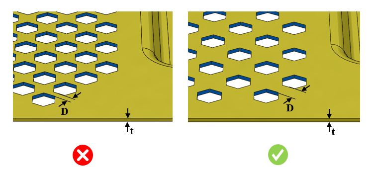

穿孔カットアウト間の最小距離を板厚で割った比は、表で構成された値に従う必要があります。
穿孔カットアウト同士が近すぎると、製造時に問題が発生する可能性があります。打ち抜き加工されたカットアウトの場合、き裂や破断を引き起こすような薄肉部での打ち抜きは、金型の一部によって妨げられます。また、形状が密集することでクランプのための十分なスペースが確保できず、変形が発生することもあります。
カットアウト形状に基づいて、DFMPro は部品上の穿孔カットアウトを識別します。このルールでは、カットアウト間の最小距離と板厚の比を検証し、その値がユーザー指定の値以上であることを確認します。

ここでは、
t = 板厚
D = 穿孔カットアウト間の最小距離
注記：
パターン機能を使用して作成されたカットアウトは、穿孔カットアウトとして扱われます。
モデルに穿孔カットアウトが含まれており、ルールファイルで「穿孔カットアウト間の最小距離」ルールが選択されている場合、それらのカットアウトは本ルールを用いて解析されます。ただし、本ルールが選択されていない場合、穿孔カットアウトは「カットアウト間の最小距離」ルールによって解析されます。